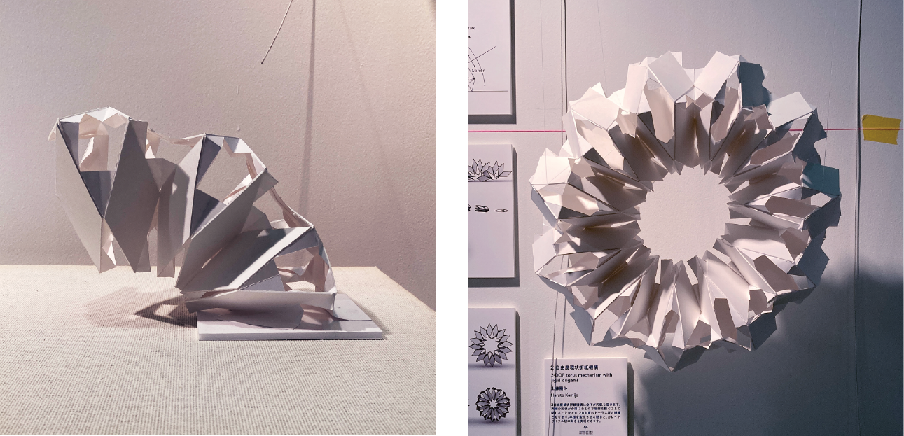

Serial Chain of Rigid Origami
2021
指導教員：舘知宏教授
円弧を成す鎖状の折り紙機構．多自由度を保ってモジュールを連結できる機構はほとんど類例がない．端部のみから曲げや伸縮といった全体姿勢の制御ができることはロボットアームなどへの応用を期待できる．菱形3枚からなるモジュールを鎖状に連結することで，伸縮，曲げ，回旋に対応づけられる3自由度を持って動作する．円弧を成すことから，両端を閉じることが可能で，この場合，半径の変化と，カレイドサイクル状の回転の2自由度を持つ環状機構となる．
keywords
機構，自由度，折り紙
主な発表
Haruto Kamijo, Tomohiro Tachi.
論文リンク
展示
CONNECTING ARTIFACTS つながるかたち展01」，駒場博物館，東京，2021
展示Webサイト
モジュールが鏡映反転によって連結され，鏡映面の交線を軸とした円弧を描く．

伸縮，曲げ，回旋に対応する3自由度で全体が連動する．
両端を閉じてトーラス状にすると2自由度の機構となる．
- 
「CONNECTING ARTIFACTS つながるかたち展01」（駒場博物館，東京，2021）での展示